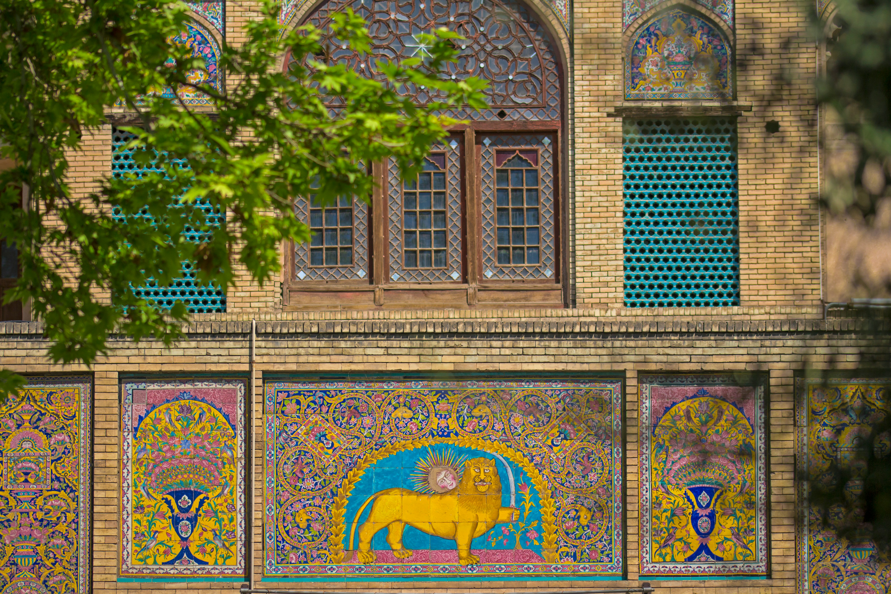
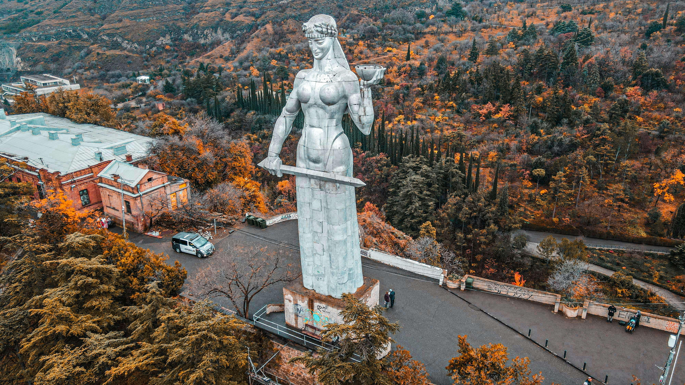
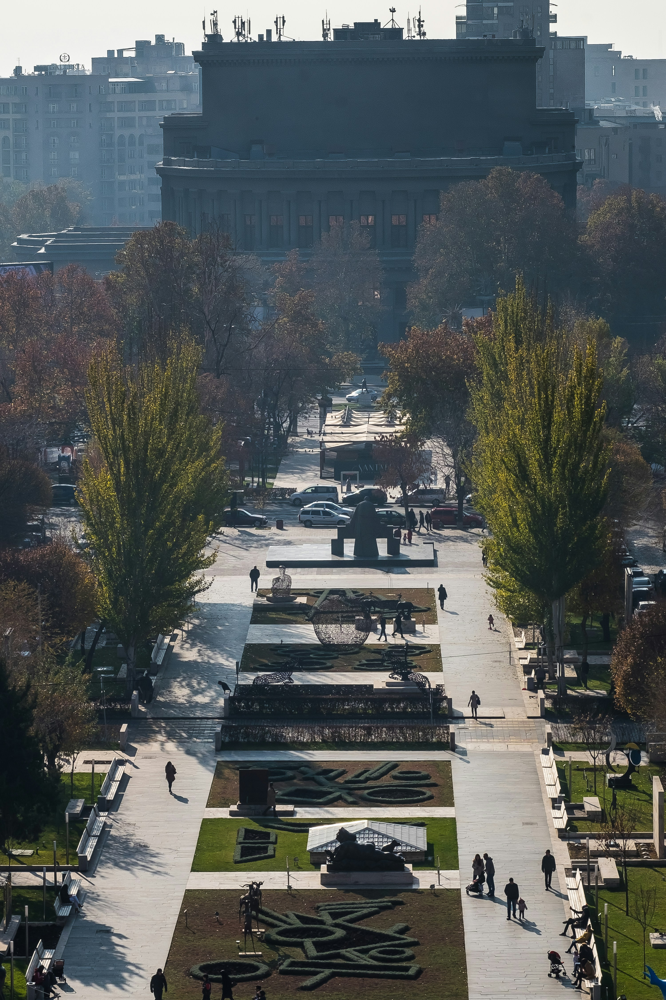

En güzel destinasyonları burada keşfedin.
Tahran, İran'ın başkenti ve en büyük şehridir. Ekonomik ve kültürel merkez olan Tahran, modern yapıları ve tarihi dokusuyla dikkat çeker. Şehirdeki müzeler, parklar ve tarihi yapılar ziyaretçilerine zengin bir deneyim sunar.
Tiflis, Gürcistan'ın başkenti ve en büyük şehridir. Avrupa ve Asya'nın kesişim noktasında yer alan Tiflis, tarihi ve kültürel zenginlikleriyle ünlüdür. Şehirdeki eski Sovyet binaları, Arnavut kaldırımlı sokaklar ve lezzetli Gürcü mutfağı, ziyaretçileri büyüler.
Erivan, Ermenistan'ın başkenti ve en büyük şehridir. 2500 yıllık tarihiyle dikkat çeken Erivan, kültürel ve sanatsal etkinliklerin merkezi konumundadır. Şehirdeki müzeler, parklar ve tarihi yapılar, ziyaretçilere unutulmaz anılar sunar.
